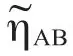
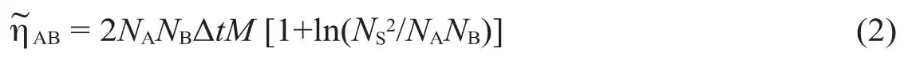
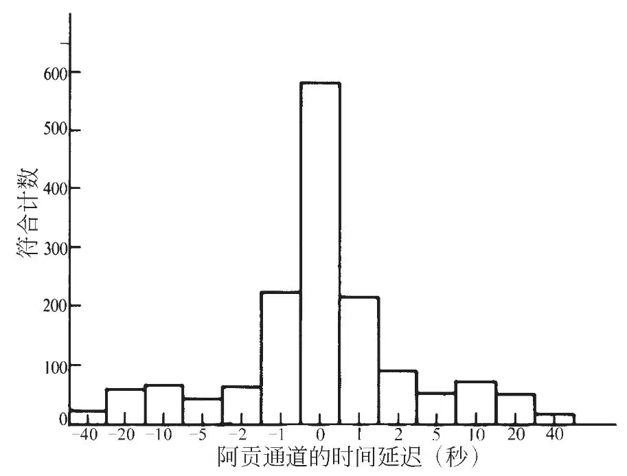
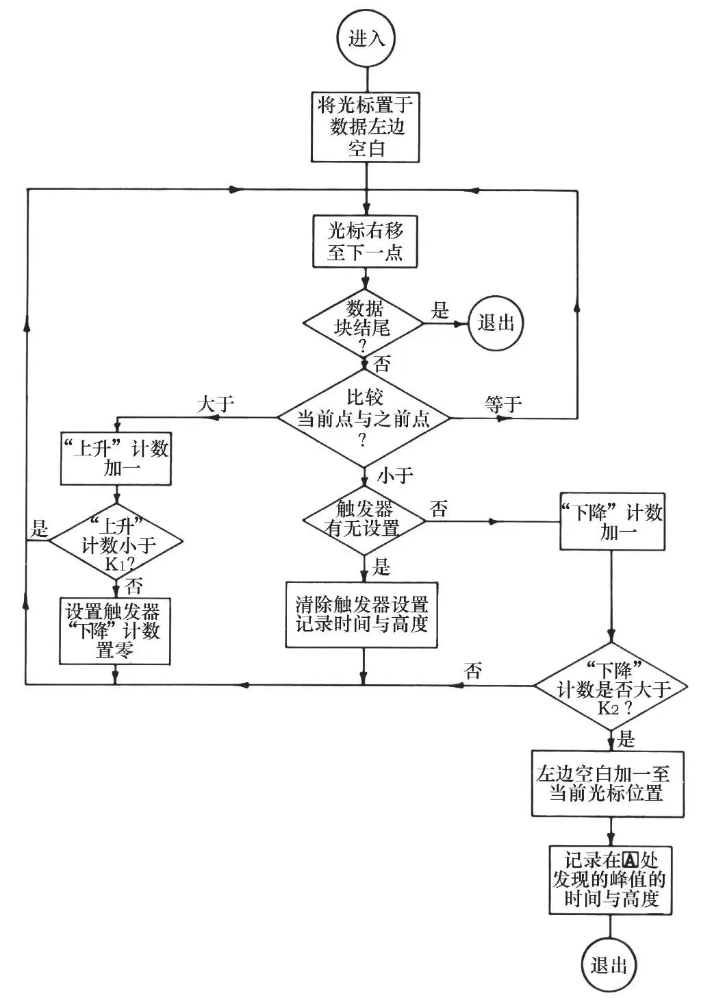

英文
英文韦伯
编者按
广义相对论认为引力辐射来自大而重的致密物体，如中子星和黑洞。约瑟夫·韦伯设计并搭建了相距约1,000千米的两个天线系统来探测引力辐射。在这篇文章中，他分析了由这些天线系统得到的信号，并在探测中发现了符合事件，他认为这些符合事件是引力波穿过实验装置的证据。现在我们知道他的这种论断是错误的，但是这篇论文帮助人们开创了引力波探测的领域。之后，人们在对一个毫秒脉冲星轨道的观测中发现了引力辐射的间接证据，但直接探测还有待实现。 英文
我已经在之前发表的文章[1]中陈述过探测引力辐射的天线的概念、理论和研制。这些天线通过声屏蔽和电磁屏蔽与局部环境充分隔离，但仍然会对足够大的局部扰动产生响应。不过，使用相距很远的两个探测器可以将局部环境的影响降到最低。因此我们使用两个天线在1,661赫兹频率上进行了符合计数实验，其中一个天线位于马里兰大学，另一个则位于1,000千米之外的阿贡国家实验室。 英文
在本文报告的所有实验中，被记录的符合事件都发生在事先确定的时间间隔Δt中。 英文
符合事件可能是因为一个共同的源激发两个探测器而引起的，也可能是偶然产生的。制定一个符合事件的分级方案并计算每个等级中的偶然符合数目，是计算偶然符合计数率的通常做法。对一个给定等级来说，如果探测到的符合事件明显超出该等级的偶然符合计数率，就表明在一定置信水平上，并非所有的符合计数都是偶然产生的。 英文
两年时间的实验开展情况如下。马里兰和阿贡探测器的输出由同步探测器获得，该同步探测器装备了自由运转的晶体参考振荡器，并具有双通道，其中一个的参考相位移动了π/2。设定时间常数为0.5秒，可将两个通道的输出求平方和来得到原先的功率。通过电话线将阿贡探测器的总功率输出包络以数字编码形式传递到马里兰，并在马里兰将其转换回模拟直流信号。输出信号由一个符合探测器接收。在时间间隔Δt内，如果两个通道的信号都上升至超过事先设定的阈值，就会发出一个脉冲来驱动记录仪的记号笔。 英文
噪声脉冲的幅值符合瑞利分布，且其形状变化很大。如果所有脉冲的形状都大致相同，分析将得以简化，因为这时只需使用脉冲高度这一个参数就能够对它们进行分级。对脉冲的适当整形需要在符合计数检测后再进行第二级过滤。此外还存在少量附加滤波，它们与在图纸上记录输出的记号笔的质量有关。 英文
选择平均太阳日作为时间单位。考虑功率幅值分别为PA和PB的两个通道的给定符合计数。令NA和NB代表每天功率值达到或者超过PA和PB的平均次数，Δt代表：为了记录到一次符合计数，两个通道越过功率阈值的最大时间间隔。在有效实验时间M天的观测中，功率幅值达到或者超过规定值的偶然符合的预期次数ηAB为：
ηAB = 2NANBΔtM
（1）
为了利用公式（1），我们任意选择了一些数值，这些数值对通道A和B来说可能相同，也可能不相同。一个给定的等级包含所有满足下述条件的符合计数，即NA和NB都等于或者小于那些针对它们任意选择的数值。 英文
为了确定观测到的符合计数和偶然符合计数的差值是否对统计方法的细节敏感，我们采用了另一种分级方案。我们不限定NA和NB每一个都必须处在给定的等级区间中，而是要求它们的乘积NANB等于或者小于为某一给定等级设定的任意值。因为不管是NA还是NB都不能小于1，也不能大于在每个通道观测到的总脉冲数量，所以这样的偶然符合的总数目是有限的。最有用的等级是那些NA和NB小于某个数值NS的，这个NS比按照公式（1）进行分级的大多数代表真正符合计数的数目约大一个数量级。 英文
考虑一个以NA和NB为坐标的二维空间，它有助于计算乘积NANB等于或者小于某个常数并且NA和NB都不超过某个最大值NS的偶然符合的数目

。等于公式（1）加上双曲线NANB =常数下的积分，即
公式（1）和（2）中的M小于实验运行的实际天数，这是因为必须考虑越过阈值后探测器的弛豫时间，在这段时间内不会出现新的符合计数。 英文
由早期的一些实验[5,6]发现：对于特定的NA、NB、NANB值，符合计数的数目大大超过了由公式（1）和（2）计算得到的偶然符合计数率。这些实验给出的符合计数观测值和偶然符合计数的差值大致相同。认为能够获得肯定性结果的结论建立在某些假设的基础之上——例如，假设单纯基于幅值然后再过滤的分级方案是合理的。为了检验这个假设，我们进行了一项对照实验，通过在一个或者另一个通道中加入不同长度的时间延迟来测量偶然符合计数率。 英文
这个时间延迟实验显示，在时间延迟显著大于Δt的情况下：当NA、NB≤100时，符合计数的数目大大降低；当NANB≤6,000且NS≤1,000时，符合计数的数目也大大降低。数据处理中的一个主观因素在于，标记每个符合计数时都必须检查脉冲的前沿。如果它平滑地上升到峰顶，那么这个峰值就是所需的幅值。如果在到达峰顶前的上坡中间有一个间断点，我们就认为：导致超越阈值的激发之后，在间断点处紧跟着一个热库噪声激发。这样所需的脉冲高度就只能是间断点处的值。有时候这个间断不是很明显，需要人为主观判断。 英文
磁带和计算机的应用提供了一个独立的数据处理程序。只有在程序准备的过程中会牵涉到人为因素。可以对任何一部分数据应用不同的阈值和时间延迟。设过滤时间常数为0.5秒，同步探测器两个通道的输出都以数字形式每隔0.1秒记录到同一个磁带上。布赖恩·里德先生准备了一个计算机程序，情况如下：设定好阈值，一旦两个通道在0.5秒的时间范围内都上升超过阈值，计算机就会在第二级时间常数为5秒的过滤以及第三级时间常数为0.5秒的过滤之后模仿记录笔来测量脉冲高度。接下来计算机按照图2所示的流程计算出前1小时、前6小时以及某一天之内过滤后的数据幅值达到或者超过阈值的次数。对1秒、2秒、5秒、10秒、20秒和40秒的时间延迟，也重复运行同样的程序。 英文

图1．磁带数据的计算机分析，1970年10月至1971年2月 英文

图2．用于对磁带上记录的符合计数进行统计的计算机程序 英文
这个程序对20秒以上的延迟不是很精确。图1中40秒延迟的柱高的数值太小了。随后的一个计算机程序证实：对于超过符合时间窗100倍以上的延迟，偶然符合计数率并没有进一步的降低。 英文
笔墨记录的脉冲前沿比较平滑。磁带记录的时间分辨率较高，导致脉冲在各点处都有点粗糙。因此很难用一个程序去测量到前沿上坡间断点处的脉冲高度。计算机对峰顶的定义是从上升走向变为下降走向的转折点。对大大扩展的脉冲进行的详细研究显示：对绝大多数符合计数，这一定义是合理的。由于平均时间为5秒，一般预期在超越阈值后2秒到15秒之间达到脉冲峰顶，也只有当峰顶出现在这一区间时，符合才会被记录。规定这一数值范围是因为考虑到了噪声和滤波电路的电容器的初始充电情况。计算机也测量脉冲的面积，不过没有包括在统计分析中。 英文
由于在超越阈值后所要求的时间区间内未能发现峰顶，有一小部分符合计数没有被程序捕捉到。一般来说，通过详细的测绘可在超越阈值后所要求的时间内识别出这个峰顶。为了节约计算时间和成本，这样的符合计数没有被包括在这些数据中。 英文
图1是NANB≤10,000且NS≤1,000的所有符合计数结果。当阈值被超越且由于噪声的存在而被再次超越时，低强度的符合经常被多次计数。因此，直方图给出的符合计数是磁带记录的120天内真实符合计数的两倍左右。图1中所有数据都来源于计算机，而不是对打印列表人工检验的结果。 英文
值得注意的是：任一通道的时间延迟，尽管小到只有符合计数时间间隔Δt的两倍，也使得符合计数率下降到原来的2/5。对20秒的延迟，符合计数率下降到原来的1/10左右。这些未经人工处理的数据毫无疑问地表明，相隔1,000千米的引力辐射探测器受到了同一个源的激发。 英文
在我们根据图1确定这个源就是引力辐射之前，必须排除其他目前已知的干扰。这些干扰包括地震、电磁以及宇宙线的影响。 英文
这些探测器通过地球互相耦合，会对足够大的地震事件产生响应。我们研制了许多台地震计，包括一台探测器频率被调到1,661赫兹的垂直轴加速度计、一台覆盖100赫兹左右频率的三轴加速度计以及一台二轴倾斜仪。在地震活动与符合计数之间没有发现显著的关联。 英文
电磁信号可能会通过真空室或者电子设备的电缆及屏蔽物进入仪器。我们进行了一些实验来测量系统对电磁干扰的敏感度。结果发现强度约为0.1高斯的1,661赫兹磁场能够激发探测器。若为830.5赫兹，则要激发探测器所需的磁感应强度就要大得多。因为电磁应力张量是电磁场的二次型，并且电磁应力可以在探测器圆筒上产生机械力，所以这种非线性效应是可以预期的。1,661赫兹处的响应很强是因为电子在那里有一个接收带，并且因为在铝制圆筒中1,661赫兹的电流通过与地磁场的相互作用而产生了力。 英文
由于金属天花板和仪器周围的金属结构接地，两个实验站在某种程度上都是被屏蔽的。我们在马里兰站使用了一台无线电接收器，将其非线性前置放大器和后置放大器调频到1,661赫兹附近的窄波段。接收器的灵敏度可调，哪怕场强小到远远不够激发引力辐射探测器，也可以产生响应。我们在不同的位置使用磁偶极和电偶极天线，在不同的时间采用了不同的方向。与空调、磁带记录仪和电源线波动相关的局部电磁场限制了无线电接收器的灵敏度，其数值大概比引力辐射探测器响应的小3个数量级。在电磁干扰与引力辐射探测器符合计数之间没有观测到显著关联。 英文
还有其他证据可以证明符合计数不是电磁或地震干扰引起的。我们曾用噪声发生器测量引力辐射探测器系统的输入温度。这样可以准确说明所有显著信号源的情况，并排除输入温度的任何主要部分来源于内噪声以外的其他背景的可能性。如果符合计数是由像地震或者电磁活动这样的地球效应引起的，那么这样的信号会同时或者几乎同时到达地表或地球内部同一区域的两个实验站。然而，对于每一个同步到达两个地点的符合事件，都应该伴随有很多单个的到达，这样就会产生高于实际观测值的系统噪声水平。我们还测量了6个月内马里兰站一对引力辐射探测器的符合计数率。在实验误差范围内，同一站中两个探测器的符合计数率与另一站中两个探测器的符合计数率是完全相同的。这个结果表明：在本文涉及的灵敏度范围内，与局部环境的隔离是足够好的，并且观测到的符合计数不是由电磁和地震干扰引起的。 英文
1,000千米的距离太远，因此不太可能用宇宙线簇射来解释符合事件。尽管如此，研究宇宙线带电粒子的影响还是很重要的。桑德斯·沃尔教授、高朗·尤德教授和戴维·埃兹罗博士在马里兰站的一个引力辐射探测器上装备了切伦科夫辐射计数器，后来又装备了米方塑料闪烁体。他们在宇宙线簇射与引力辐射探测器符合计数之间没有观测到显著的关联[7]。 英文
我们对同样位于马里兰站的一个1,661赫兹引力辐射探测器和另一个5,000赫兹模式引力辐射探测器之间的符合计数进行了研究。没有观测到超过偶然符合计数率的符合计数。接下来的研究表明：5,000赫兹模式是一个弯曲模式，而不是一个压缩模式。广义相对论预言这种弯曲模式不会和引力辐射发生相互作用。两个探测器之间缺乏符合计数的事实就成为否定1,661赫兹下符合计数来自非引力辐射源的证据。 英文
另有一些文章提出证据指出：观测到的符合计数具有各向异性，最大值出现在银河系中心方向[8]。圆盘实验的结果与爱因斯坦纯张量理论的预言一致。局部环境的小作用会显著影响各向异性。为了适当地平均这些影响，最少需要6个月的数据。本文采用的磁带记录在时间上不连续。空白以及记录器故障使得数据不足以用来进行各向异性的研究。对计算机发现的符合事件列表进行的表观检查显示，这些数据与之前基于对笔墨记录表格进行人工观测研究而得到的各向异性实验结果一致。 英文
现有数据没有人为观测偏差。除了要求有相当平滑的前沿之外，对预期脉冲的持续时间或其形状都没有作任何别的假设。这一点的重要性在于，噪声的加入会改变接收到的脉冲的形状。我们认为已经可以毫无疑义地接受，在1,000千米基线两端的引力辐射探测器是由一个共同的源激发的。这是相互作用的结果，这个作用既不是地震或电磁，也不是来自宇宙线带电粒子。 英文
感谢戴森、特林布尔和林戈与我进行了有价值的讨论，还要感谢格雷茨和佩雷格林对引力辐射探测器的维护和操作。美国国家科学基金会和马里兰大学计算机科学中心都为这项工作提供了部分支持。 英文
（何钧 翻译；张元仲 审稿）